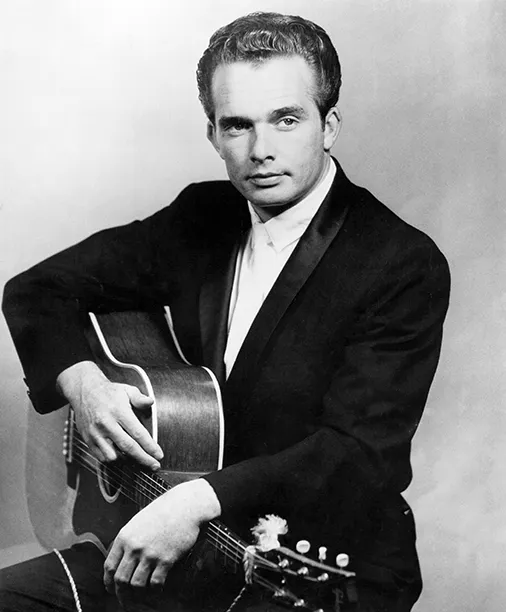
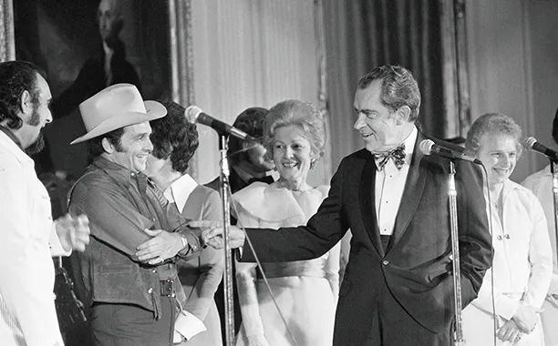
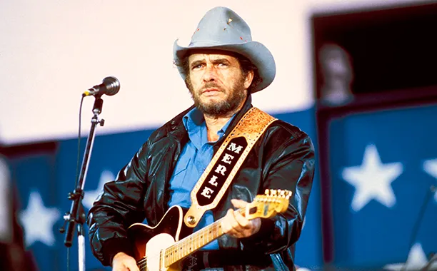

Images of Merle Haggard
Merle Haggard in 1964 after recording "Mama Tried"

Merle Haggard in 1973 after recording "Workin' Man Blues"

Merle Haggard in 1985 after recording "I Can't Drive 55"

Merle Haggard in 2015 after recording "Django and Jimmie"
Web index